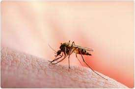
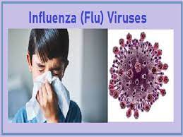

According to the World Health Organization and the CDC, the following are some of the most common health problems associated with travel to developing countries:
corona
Traveler's diarrhea (by far the most common risk since it affects up to 80% of international travelers based on the destination)
Enterotoxic E. coli diarrhea
Malaria
Acute febrile respiratory tract infections
Influenza


Less common infections may also be a risk in certain areas